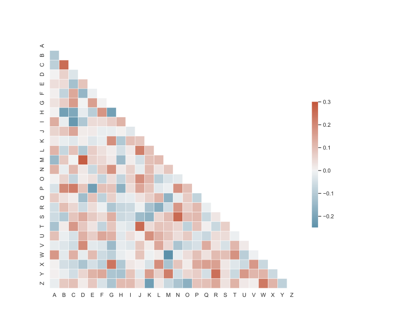
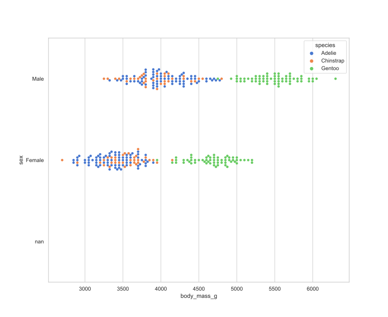

The question
How to use Python’s Seaborn in RStudio?
Preparations
Sys.setenv(RETICULATE_MINICONDA_PATH = 'C:/Users/Public/r-miniconda')
import subprocess
import sys
def install(package):
subprocess.check_call([sys.executable, "-m", "pip", "install", package])
install('seaborn')
Plot and save heatmap
from string import ascii_letters
import numpy as np
import pandas as pd
import seaborn as sns
import matplotlib.pyplot as plt
sns.set_theme(style="white")
# Generate a large random dataset
rs = np.random.RandomState(33)
d = pd.DataFrame(data=rs.normal(size=(100, 26)),
columns=list(ascii_letters[26:]))
# Compute the correlation matrix
corr = d.corr()
# Generate a mask for the upper triangle
mask = np.triu(np.ones_like(corr, dtype=bool))
# Set up the matplotlib figure
f, ax = plt.subplots(figsize=(11, 9))
# Generate a custom diverging colormap
cmap = sns.diverging_palette(230, 20, as_cmap=True)
# Draw the heatmap with the mask and correct aspect ratio
sns.heatmap(corr, mask=mask, cmap=cmap, vmax=.3, center=0,
square=True, linewidths=.5, cbar_kws={"shrink": .5})
f.savefig('sns.heatmap.svg')

Plot and save kdeplot
data = np.random.multivariate_normal([0, 0], [[5, 2], [2, 2]], size=2000)
data = pd.DataFrame(data, columns=['x', 'y'])
f, ax = plt.subplots(figsize=(11, 9))
for col in 'xy':
sns.kdeplot(data[col], fill=True)
f.savefig('sns.kdeplot.svg')

Plot and save swarmplot
import seaborn as sns
sns.set_theme(style="whitegrid", palette="muted")
# Load the penguins dataset
df = sns.load_dataset("penguins")
f, ax = plt.subplots(figsize=(11, 9))
sns.swarmplot(data=df, x="body_mass_g", y="sex", hue="species")
f.savefig('sns.swarmplot.svg')
